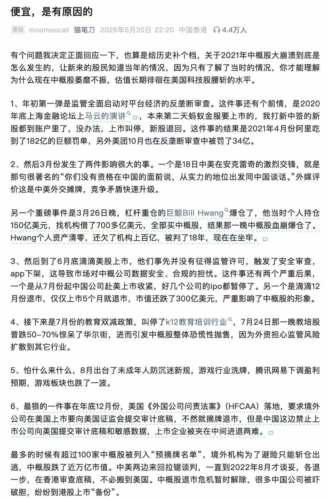

索瑟尔 𝓢𝓸𝓻𝓬𝓮𝓻𝓮𝓻🍥🏳️⚧️
@Sorcerer198964
RT @mdzzi: 记得21年5月的时候
在网易有道的现场，当时管理层的老哥们都已经非常悲观了，过了几个月搞教培的都是平均跌个百分之七八十……
再读一遍招财猫写的中概论述，依然不过时
便宜的东西果然都是有原因的

茶不思
@mdzzi
记得21年5月的时候
在网易有道的现场，当时管理层的老哥们都已经非常悲观了，过了几个月搞教培的都是平均跌个百分之七八十……
再读一遍招财猫写的中概论述，依然不过时
便宜的东西果然都是有原因的 https://t.co/bJQApCTCDQ